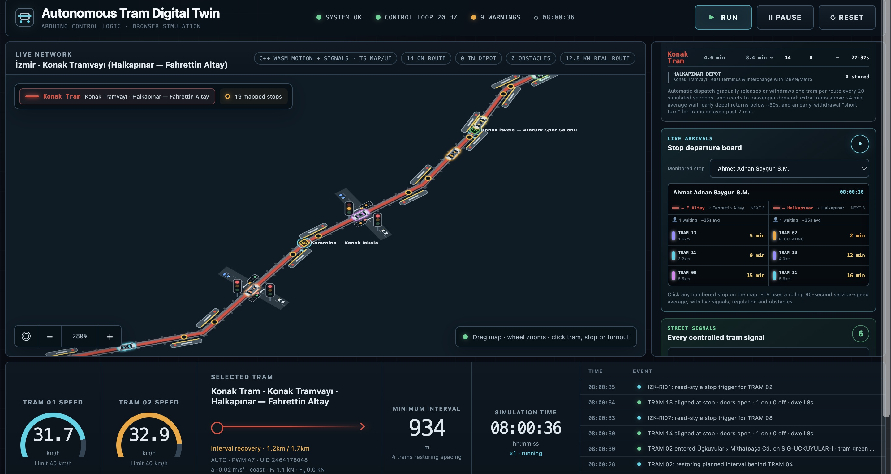
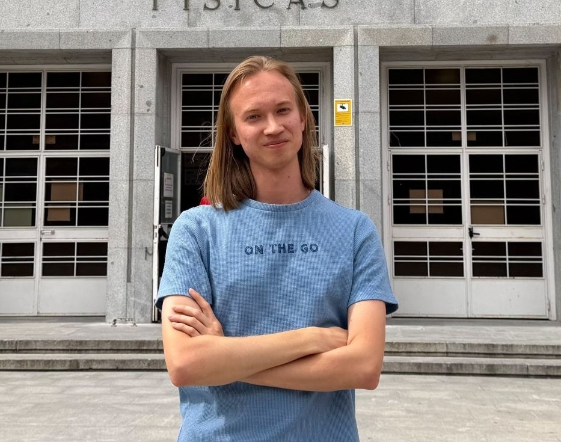
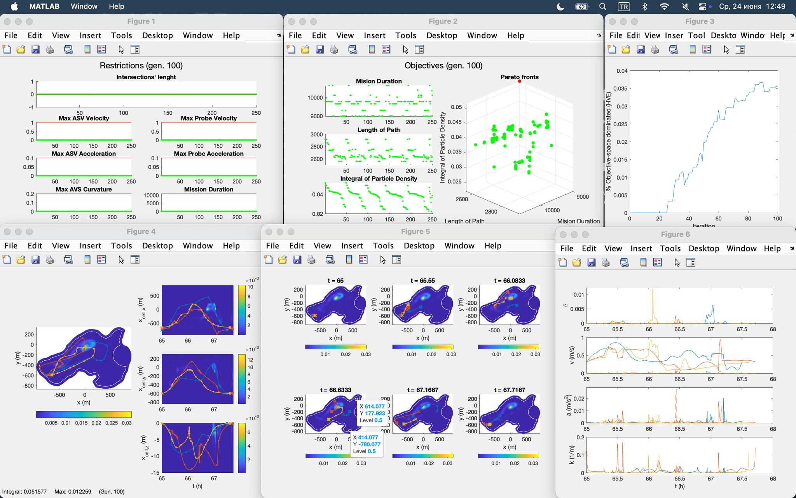
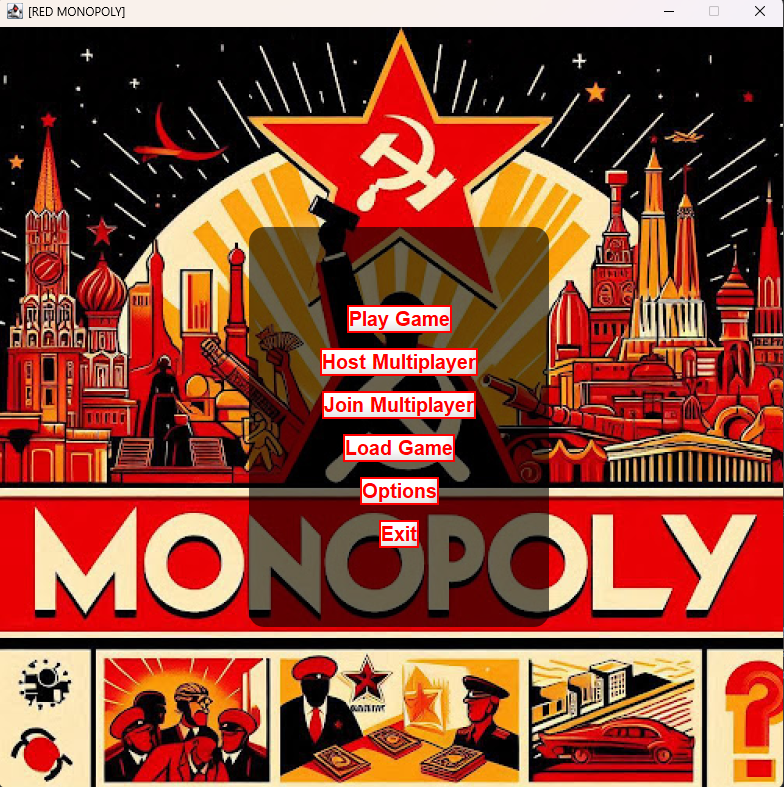
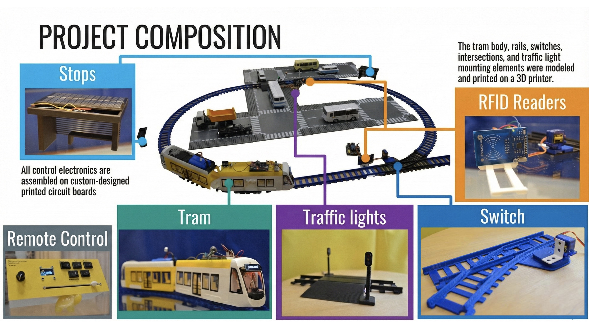
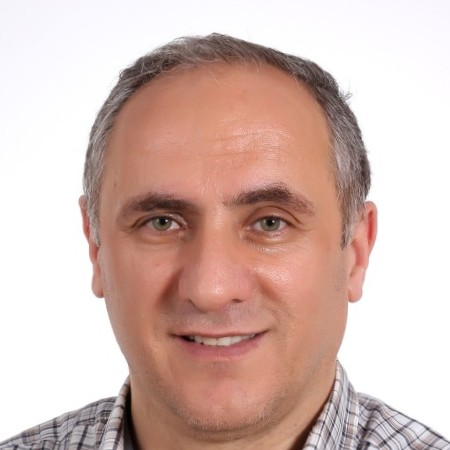

Autonomous Tram Digital Twin
2026 – ongoing
A simulator for multi-tram operations, passenger demand, dispatch control and energy-efficiency experiments.
Computer Engineering · Robotics · Optimization
Computer engineering student building autonomous systems, from embedded firmware and custom PCBs to multi-objective trajectory optimization. Based in Izmir, Türkiye.

International finalist at the World Robot Olympiad 2021 with an autonomous tram system, now a Computer Engineering student at Yaşar University, with an Erasmus+ year at Universidad Complutense de Madrid.
In 2026 I worked on multi-vehicle trajectory planning at the ISCAR Research Group in Madrid, extending a MATLAB planner using NSGA-II/III optimization for fleets of autonomous surface vehicles.
Today I’m developing an autonomous tram digital twin, a C++/WebAssembly simulator for multi-tram operations and energy efficiency.

2026 – ongoing
A simulator for multi-tram operations, passenger demand, dispatch control and energy-efficiency experiments.

Jun – Jul 2026 · ISCAR Research Group
Multi-objective mission planning for fleets of autonomous surface vehicles monitoring cyanobacterial blooms.

Jan – May 2025
A Java desktop board game with multiplayer for up to eight players, adaptive AI and a separate game logic layer.

2020 – 2022
Autonomous model tram with custom electronics, real-time control and vehicle-to-infrastructure communication.
LinkedIn recommendation
Aleksandr was a motivated and engaged student who showed a genuine interest in learning and developing his knowledge of computer engineering. He approached his studies with a positive attitude and demonstrated curiosity and enthusiasm throughout the course.
Fundamentals of Computers I & II lecturer · 2024–2025
LinkedIn recommendation
Aleksandr demonstrated exceptional understanding, earning an A in both courses and achieving a perfect score (100/100) on the Calculus II midterm, a distinction earned by only two students across the university.

Calculus I & II lecturer · 2023–2024
Course and certificate details will be added here soon.
Email: algordeev18@gmail.com
GitHub: github.com/algordeev
LinkedIn: linkedin.com/in/algordeev